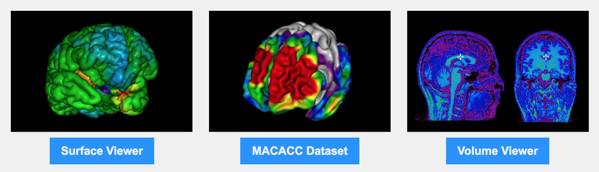

THE MNI Ecosystem
Database management and processing ecosystem for data-sharing initiatives
NOVEMBER 2017
Samir Das
Director of Technology
McGill Centre for Integrative Neuroscience
Montreal Neurological Institute

|

|

|
THE MNI Ecosystem
Database management and processing ecosystem for data-sharing initiatives
NOVEMBER 2017
Samir Das
Director of Technology
McGill Centre for Integrative Neuroscience
Montreal Neurological Institute
|
|
|
|
THE MNI Ecosystem
Database management and processing ecosystem for data-sharing initiatives
NOVEMBER 2017
Samir Das
Director of Technology
McGill Centre for Integrative Neuroscience
Montreal Neurological Institute
|
|
|
|

What’s involved?
Longitudinal Acquisition, Storage and Curation, Interoperability, Reproducibility, Transfer, Anonymization, Security, Privacy, Ethics, APIs, Validation, Quality Control, Protocol Checking, Preprocessing, Analysis, HPC,
Provenance, Ontological Standarization,
Data Harmonization, Upgrades, Maintenance, Bug Fixes, User Interface, Javascript, Bootstrap, Tracking, Extensibility, Data Management, Summary Statistics, Workflows,
Development, Tool Integration, Data Sharing, Download, Multi-Modal Linking, Querying, Image Processing, Visualization, Networking, System Administration, Partnerships, Funding, HR
...No big deal!
LORIS-CBRAIN INTEGRATION

WHAT IS LORIS?

“..is a modular and extensible web-based data and project management software that integrates all aspects of a multi-center neuroimaging research study. It is an OPEN SOURCE framework and database suitable for managing large datasets.” |

|
What is LORIS?
Heterogenous data acquisition |
|
Storage, processing & dissemination |

LORIS Globally
What does LORIS do?

What does LORIS do?

Extensible and modular design

|

|

What does LORIS actually do?
DATA ENTRY
|

|
Heterogenous Data
Candidate Profile, Instrument Builder, Feedback Module, Double Data Entry, Conflict Resolver
Imaging Data
1. Acquisition & Storage
2. Visualisation: Imaging Browser, BrainBrowser
3. Quality Control: Radiological Review Module, DCC MRI
Data Querying
- Imaging Statistiscs
- Data Querying Tool (DQT)
Cross-Modal Querying
Real-Time Query Results
Statistical Analysis
Genomics Browser
WHAT IS CBRAIN?

|

|
What does CBRAIN do?
..enables distributed execution of software pipelines
..aggregates multiple distributed file systems into uniform view
NOW
611 users (199 international)
191 sites
29 countries
CBRAIN Computing Resources
51 tools, 1M+ files
6 Compute Canada clusters
24M CPU core hours
CBRAIN portal

TRY ME!
CARMIN
Common API for Research Medical Imaging Network
A common web API for remote pipeline execution
NIAK
http://niak.simexp-lab.org/
From Data
To
Visualization
BrainBrowser
..a set of web-based 3D visualization tools primarily used for viewing neurological data i.e. MRI scans.
It allows for real-time manipulation and analysis of 3D neuroimaging data through any modern web browser. TRY ME!
Volume Viewer on LORIS
|
The BigBrain is the digitized reconstruction of 7404 hi-res coronal histological sections (20 microns isotropic). It is the brain of a 65 year-old man with no neurological or psychiatric diseases in clinical records at time of death.  |

|
BigBrain - high resolution reference brain
Multimodal integration into an anatomically realistic standard space
Years of development
20 micron resolution
7404 histological slices
1 Terabyte dataset
What is BigBrain?
The BigBrain dataset is the result of a collaborative effort between the teams of Dr. Katrin Amunts and Dr. Karl Zilles (Forschungszentrum Jülich), and Dr. Alan Evans (Montreal Neurological Institute)
Available freely at https://bigbrain.loris.ca
Visualization with Atelier 3D
PIVT (New)
Display
Moving Neurogimaging to the web
Easy integration into CBRAIN and LORIS
Pixpipe
Big Brain and Neuroglancer
Feedback


|

|
|


|

|
|

Quebec Parkinson Network


|
|
ADNI

|
|


Healthy Brains for Healthy Lives (HBHL)
An interdisciplinary program at McGill University leveraging neuroinformatic technologies to transform terminal or life-long afflications to treatable or even curable conditions


What is Data Sharing?
Exchange of information
Datasets
Tools
Standardization
Databases
Collaborations
Conferences, Hackathons
Facebook, Google, Twitter, etc.
Image source: http://blog.veritythink.com/post/87880448269/creative-data-sharing-and-open-humanitarianism
Data Sharing Issues
| Benefits | Hurdles |
|---|---|
| More citations | Fear |
| Reduces waste/duplication | Technical challenges |
| Increased exposure | Privacy concerns |
| Access to larger datasets | Data Harmonization |
| Access to rare data | Interoperability |
| Less attrition | Reproducibility |
| Increased validation | Obtaining ethics |
| Saving Tax $$/more funding | Public dataset not identical |
Global Data Sharing Initiatives
| Committee on Best Practices in Data Analysis and Sharing (COBIDAS) |

|

|
Collaboration with global data sharing groups
INCF, Open Science Framework, NITRC, Allen Institute, NDAR, HAWG (Atlas Building Group), Organization Human Brain Mapping, Human Brain Project, Compute Canada, Maelstrom, Edinburgh BRAINS ImageBank, COINS, XNAT, VIP, BrainCode, BIDS, NIDM, NeuroDevNet, GUSTO, QPN, Boutiques, VIP

|
Important value of hackathons to data sharing initiatives 
|
Open Science

|

|


Cyberinfrastructure

Cybersecurity

Open Science Functionality
| Acquisition & Storage | Dissemination & Analysis |
|---|---|
| Organized/Accessible data | Centralized repository |
| Long term storage | Provenance Capture |
| Quality Control mechanisms | API for interoperability |
| Web visualization | Consent is factored in |
| Tablet/Mobile Friendly | User account access control |
| Anonymized automatically | Completely de-identified |
| Cross-modal linking | Cross-study correlation |
| Online Data Querying | Access to high performance computing |
LORIS Biobank instance

LORIS Imaging instance

Benefits of Open Science
| Organized/Accessible data | Greater exposure |
| More collaborations | Data validation |
| Access to Quality Control results | Access to larger datasets |
| More citations | Greater funding |
| Cross-modal linking | Cross-study correlation |
| More robust findings | Greater reproducibility |
MNI History
1999: MNI ecosystem implemented for NIH multisite MRI Study of Normal Brain Development
2015
LORIS: 130 sites worldwide, 30,000+ data collection time points, 500+ behavioral instruments, 30+ TBs imaging datasets, 200,000 acquisitions
CBRAIN: 300+ users, 60 cities, 20 countries,
diverse projects: Prevent AD, K-ADNI, MAVAN, NeuroDevNet, 130 virtual sites, 600+ TBs storage grid across 25 servers!
National Network

|

|
Including "Data Publishing"

Future Direction
- Phase 2 LORIS/CBRAIN connectivity
- Enhanced API
- Additional modalities (eg. MEG/EEG)
- Institutional requirements
- Enhanced visualization
- Numerous new modules
- Biobanking Tracking
- Interoperability!
- Pipeline reproducibility
- Cloud technology
- Flexibility in storage, sharing, and remote processing!

|
Thank you!Acknowledgements: Alan Evans, Alex Zijdenbos, Dario Vins, Jonathan Harlap, Matt Charlet, Andrew Corderey, Sebastian Muehlboeck, Reza Adalat, Louis Collins, Vladimir Fonov, Marc Rousseau, Mia Petkova, Rathi Gnanasekaran, David Brownlee, Tarek Sherif, Pierre Rioux, Nic Kassis, Leigh MacIntyre, Claude Lepage, Ilana Leppert, Natasha Beck, Tristan Glatard, Bert Vincent, Lindsay Lewis, Najma Mahani, Elodie Portales-Casamar, Alden Woodward, Sylvain Milot, Jean Francois Malouin, Sylvain Baillet, Daniel Kroetz, Martin Weiss, Mathieu Desrosier, Jason Karamchandani, Amit Bar-Or, Ted Fon, John Brietner, Derek Lo, Patrick Bermudez, Chris Steele, Pamela Patterson and one of my favourites: Pierre Bellec! LORIS team on left |